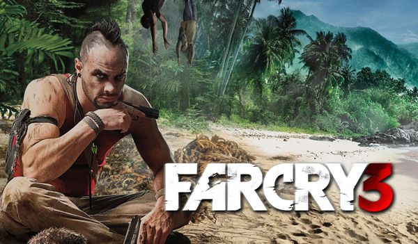

Far Cry 3

PLATFORMY
PC
X360
PS3
------

Wiecej Zdj.
Trzecia część popularnego wśród graczy cyklu pierwszoosobowych strzelanin (FPS). Gra wyprodukowana została przez studio Ubisoft Montreal, któremu pomagały zespoły deweloperskie Ubisoft Shanghai, Ubisoft Reflections i Massive Entertainment.
Far Cry 3 to trzecia odsłona popularnej serii pierwszoosobowych strzelanin, w których przemierzamy otwarty świat i bierzemy udział w zróżnicowanych starciach z grupami inteligentnych przeciwników. Za produkcję odpowiada, podobnie jak w przypadku części drugiej, studio Ubisoft Montreal, choć tym razem pomagały mu także zespoły Ubisoft Shanghai, Massive Entertainment oraz Ubisoft Reflections.
Gracze wcielają się w Jasona Brody’ego, którego wakacje zostały przerwane w brutalny sposób i w wyniku nieszczęśliwego skoku ze spadochronem ląduje na wyspie, opanowanej przez psychopatycznych piratów. Co gorsza, w niewoli pozostaje grupa jego przyjaciół, a wszędzie wokoło roi się od pozbawionych skrupułów i niezbyt stabilnych psychicznie morderców. By ocalić swoich bliskich i wydostać się z tego przeklętego miejsca Jason będzie musiał szybko nauczyć się zabijać.
Far Cry 3 to pierwszoosobowa strzelanka. Większość czasu spędzamy więc na eliminowaniu wrogów wszelkimi dostępnymi metodami. Tym, co odróżnią tę grę od większości konkurencyjnych FPS-ów jest swoboda działania. Poziomy mają najczęściej strukturę otwartą i pozwalają graczom na samodzielne wybranie taktyki. Możliwe jest zarówno ciche pozbawianie życia przeciwników, jak i zabawa w stylu Rambo, gdzie z okrzykiem na ustach i karabinem w rękach wpadamy w sam środek obozu nieprzyjaciela. Ciekawym elementem jest również uproszczony system RPG. Za postępy w kampanii nagradzani jesteśmy punktami doświadczenia, za które następnie kupujemy nowe umiejętności, przypisane do trzech ścieżek rozwoju: czapli, pająka i rekina. Każda z nich nagradza inny styl eliminacji przeciwników oraz ułatwia eksplorację archipelagu
WYMAGANIA
Minimalne:
Procesor - 2.66 GHz Intel Core 2 Duo E6700 albo 3.00 GHz AMD Athlon 64 X2 6000+ lub lepsze Pamięć RAM - 2 GB Karta graficzna współpracująca z DirectX 9.0 oraz posiadająca co najmniej 512 MB RAM-u
Rekomendowane:
Core i3-530 2.93 GHz, 2 GB RAM (4 GB RAM - Vista/7), karta grafiki 1 GB (GeForce GTX 560 lub lepsza), 15 GB HDD, Windows XP/Vista/7/8, łącze internetowe
Core i3-530 2.93 GHz, 2 GB RAM (4 GB RAM - Vista/7), karta grafiki 1 GB (GeForce GTX 560 lub lepsza), 15 GB HDD, Windows XP/Vista/7/8, łącze internetowe
Minimalne:
Procesor - 2.66 GHz Intel Core 2 Duo E6700 albo 3.00 GHz AMD Athlon 64 X2 6000+ lub lepsze Pamięć RAM - 2 GB Karta graficzna współpracująca z DirectX 9.0 oraz posiadająca co najmniej 512 MB RAM-u
PEGI


Język Gry

PL napisy, EN napisy i dialogi